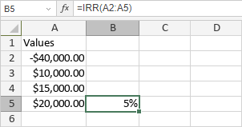

IRR funkcija
IRR funkcija je jedna od finansijskih funkcija. Koristi se za izračunavanje interne stope povraćaja za niz periodičnih novčanih tokova.
Sintaksa
IRR(values, [guess])
IRR funkcija ima sledeće argumente:
| Argument | Opis |
|---|---|
| values | Niz koji sadrži seriju uplata koje se dešavaju u redovnim intervalima. Najmanje jedna vrednost mora biti negativna, a najmanje jedna pozitivna. |
| guess | Procena interne stope povraćaja. Ovaj argument je opcion. Ako se izostavi, funkcija pretpostavlja da je guess 10%. |
Napomene
Kako primeniti IRR funkciju.
Primeri
Slika ispod prikazuje rezultat koji vraća IRR funkcija.
